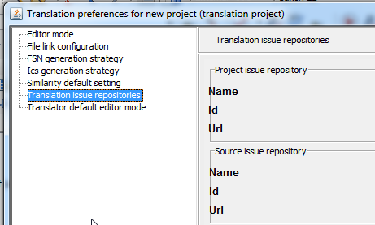

This is a view of the current external issues repositories configuration, these are the Collabnet trackers that will store the project issues and the source language issues. These settings will be pre-configured in a real environment.
